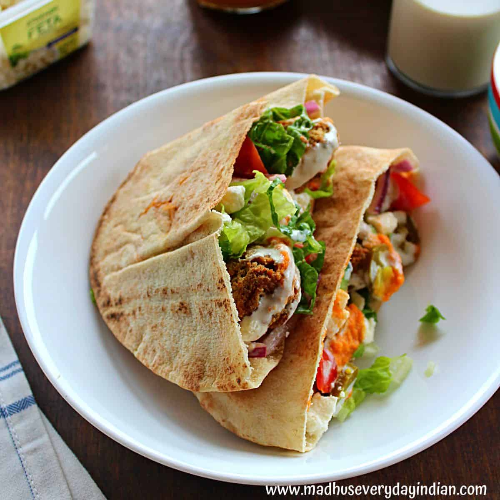
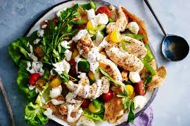

Falafel
Falafel Pita Sandwiches with creamy tahini sauce - this quite essential sandwich from Mediterranean .

Fattoush
Fattoush is a Levantine salad made from toasted or fried pieces of khubz combined with greens and vegetables

Meddamas
Ful medames is traditionally made in and served out of a large metal jug.

Grilled halloumi
Heat a grill pan over a high heat.Drizzle with the olive oil and salt and pepper.